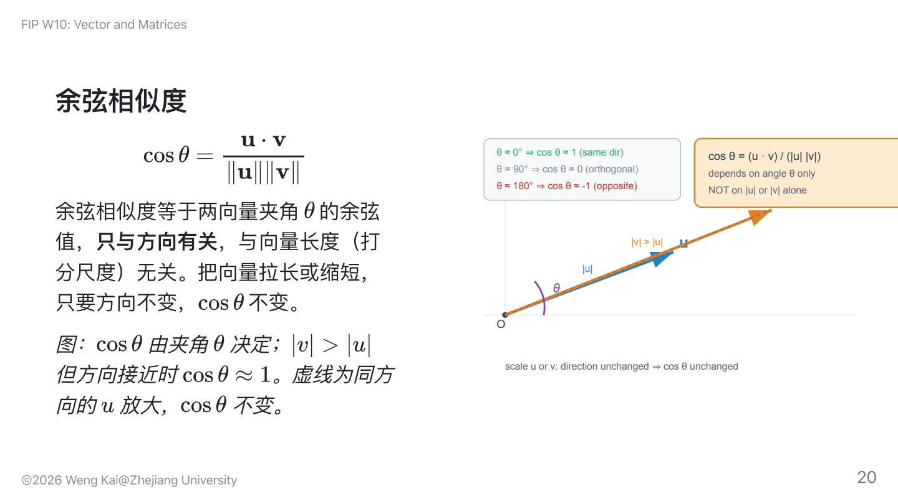
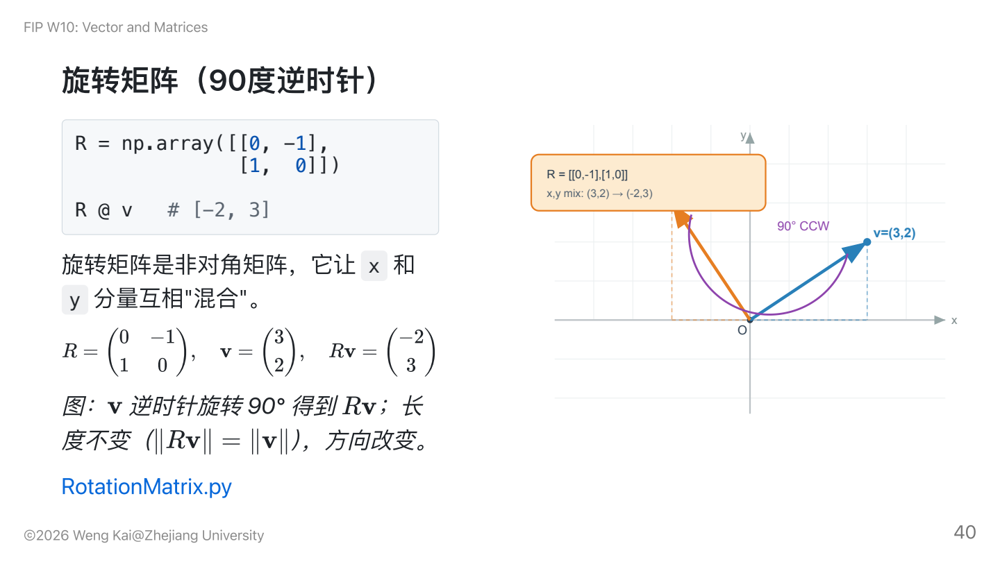
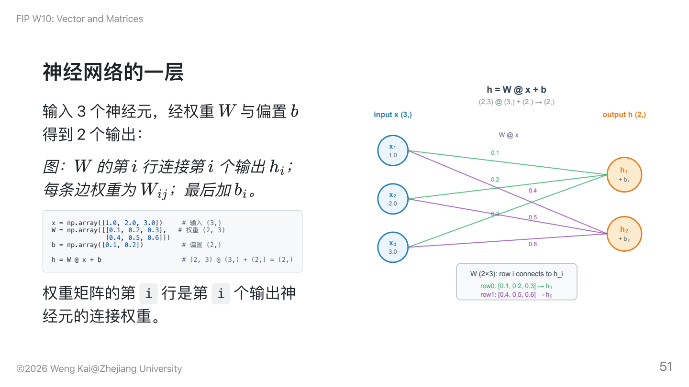

FIP W10 · 向量与矩阵
理论课内容
Quick Recap
前两周使用了两套术语体系，分别对应数据结构和Python实现。
| Data Structure | Python |
|---|---|
| array | list/tuple |
| linked list | class define |
| circular queue | list simulate |
| queue/deque/stack | deque |
| priority queue | heapq |
本周的“向量与矩阵”主题是传统数据结构和程序设计课程中不包含的，本周课程与线性代数课程高度相关，某种意义下本周的课程学习的核心对象是NumPy。
NumPy
Python列表的局限
Python列表无法做矩阵运算，且遍历访问速度很慢。
NumPy Array
可以使用np.array()创建NumPy数组，这里的数组基本就是数据结构意义上的严格数组，满足：
- 大小固定
- 类型相同
- 连续存储
import numpy as np
scores = np.array([
[85, 90, 78],
[92, 88, 84],
[78, 85, 90]
])numpy array具有一些属性： - shape：数组的形状，以元组形式呈现（单个元素时逗号不可省略） - dtype：元素的数据类型 - ndim：数组的轴数 - size：数组中的元素个数 - itemsize：每个元素占用的字节数；数值数组的数据大小为 size * itemsize
区分维度和ndim
数学上的维度和NumPy ndim是不同的概念
| 数学 | NumPy: ndim |
|---|---|
| 向量有几个分量 | 数组有几条轴（嵌套了几层） |
[5, 1, 2, 4]是4维向量 |
ndim == 1是一维数组 |
(4,) 是一维数组，(1,4) 是二维行数组，(4,1) 是二维列数组。三者都有4个元素。一维数组 .T 转置不改变形状。
列表与数组的运算区别
| 操作 | Python list |
NumPy ndarray |
|---|---|---|
+ |
拼接 | 逐元素相加 |
* |
重复 | 逐元素相乘 |
| 矩阵乘法 | 需另行实现 | @ 或 np.matmul |
| 元素类型 | 可混合 | 同一 dtype，混合输入可能转换类型或报错 |
数组的形状通常固定，改变元素个数往往需要重新分配。新建数值数组通常连续存储，但切片、转置得到的视图不一定连续。
向量：用一组数表示对象
用户偏好、文档词频、图像像素（3个RGB通道）等都可以表示为向量。需要注意的是各分量的含义和顺序必须一致才能比较，否则没有实际意义。
# 这里数据预保存为浮点数，后续可以原地归一化，否则会因为数据类型由整型变为浮点型报错
alice = np.array([5., 1., 2., 4.])
bob = np.array([4., 2., 1., 5.])| 运算 | 数学含义 | NumPy |
|---|---|---|
| L2范数 | \(\|v\|_2=\sqrt{\sum_i v_i^2}\)，向量长度 | np.linalg.norm(v) |
| 内积 | \(u\cdot v=\sum_i u_iv_i\) | np.dot(u, v) 或一维的 u @ v |
| 余弦相似度 | \(\cos\theta=\frac{u\cdot v}{\|u\|\|v\|}\) | 内积除以两范数之积 |
| 欧氏距离 | \(d(u,v)=\|u-v\|_2\) | np.linalg.norm(u - v) |
除了L2范数（欧几里得距离）之外，还有L1范数（曼哈顿距离）等比较常用的范数。
内积也满足 \(u\cdot v=\|u\|\|v\|\cos\theta\)。

余弦相似度取值为 \([-1,1]\)：1 同向，0 正交，-1 反向。非零向量整体乘正数不改变余弦；欧氏距离则保留绝对差距。比较偏好方向常用余弦，比较同尺度下的远近常用欧氏距离。
cosine_similarity 和 euclidean_distance 是下面自行定义的函数，不是 NumPy 内置函数。NumPy 提供 np.dot 和 np.linalg.norm，我们用它们实现相似度与距离计算。
def cosine_similarity(u, v):
denominator = np.linalg.norm(u) * np.linalg.norm(v)
if denominator == 0:
raise ValueError("零向量的余弦相似度无定义")
return np.dot(u, v) / denominator
def euclidean_distance(u, v):
return np.linalg.norm(u - v)Alice与Bob：内积为 44，两者范数均为 \(\sqrt{46}\)，余弦为 \(44/46\approx0.957\)，欧氏距离为 2。注意 np.abs(u-v).sum() 是L1距离，不是欧氏距离。
线性相关
两个非零向量线性相关，等价于一个是另一个的数倍，也等价于 \(|\cos\theta|=1\)。正倍数同向，负倍数反向；余弦为1不代表向量相等。若包含零向量，向量组仍线性相关，但不能使用余弦相似度判断。
矩阵：数据表与线性变换
\(m\times n\) 矩阵有 \(m\) 行、\(n\) 列，既可看成 \(m\) 个行向量，也可看成 \(n\) 个列向量。矩阵可以保存表格数据，也可以作为线性变换算子。
矩阵乘法
| 运算 | 形状规则 | 结果 |
|---|---|---|
| 矩阵乘向量 | (m,n) @ (n,) |
(m,) |
| 矩阵乘矩阵 | (m,n) @ (n,p) |
(m,p) |
| 逐元素乘法 | A * B |
按广播规则决定 |
矩阵乘法的内侧维数必须相等。结果中的每个元素是左矩阵一行与右矩阵一列的内积：\(C_{ij}=\sum_k A_{ik}B_{kj}\)。
矩阵乘向量有两种理解：按行看，结果每个分量是该行与向量的内积；按列看，结果是矩阵各列以向量分量为系数的线性组合。
A = np.array([[1, 2], [3, 4]])
B = np.array([[5, 6], [7, 8]])
A * B # [[5, 12], [21, 32]]
A @ B # [[19, 22], [43, 50]]单位、缩放与旋转
v = np.array([3, 2])
I = np.eye(2) # 单位矩阵，只需要提供一阶数参数
S = np.array([
[2, 0],
[0, 3]
])
R = np.array([
[0, -1],
[1, 0]
])
I @ v # [3, 2]
S @ v # [6, 6]
R @ v # [-2, 3]单位矩阵不改变向量；对角矩阵分别缩放各轴；这里的 R 绕原点逆时针旋转90°，保持长度不变。

连续变换从右向左作用：S @ R @ v 先旋转再缩放，得到 [-4,9]；R @ S @ v 先缩放再旋转，得到 [-6,6]。矩阵乘法一般不满足交换律，但等比例缩放等特殊情况可以交换。
成绩分析：索引与聚合
scores[0, 1] # 第0行、第1列：90
scores[0] # 第0行，shape (3,)
scores[:, 1] # 第1列，shape (3,)
scores[0:2, :] # 前两行，shape (2,3)
scores[scores[:, 1] > 90] # 第1列（第二列）超过90分的学生
scores[(scores >= 60).all(axis=1)] # 每科都及格的学生切片仍左闭右开；逗号分隔不同轴。scores[:, 1] 取一列但结果是一维的 (3,)；若要保留二维列形状，用 scores[:, 1:2]，结果为 (3,1)。
布尔索引：先判断，再筛选
数组与数字比较，会逐元素生成 dtype=bool 的数组，称为布尔掩码（mask）。用掩码作下标，只保留 True 对应的数据，不改变原顺序。
a = np.array([55, 80, 92, 60])
mask = a >= 60 # [False, True, True, True]
a[mask] # [80, 92, 60]
# 等价于 a[a >= 60]二维数组中，要区分 筛选整行 和 筛选单个元素：
grades = np.array([[85, 95, 58],
[92, 88, 84],
[50, 91, 90]])
mask = grades[:, 1] > 90 # [True, False, True]，shape (3,)
grades[mask] # [[85,95,58], [50,91,90]]，shape (2,3)
grades[mask, 0] # [85,50]，选中学生的第0科成绩
mask2 = grades >= 90 # shape (3,3)，每个成绩分别判断
grades[mask2] # [95,92,91,90]，shape (4,)| 掩码位置与形状 | 筛选对象 | 结果 |
|---|---|---|
A[row_mask]，掩码长度等于行数 |
整行 | 保留二维，行数为 True 的个数 |
A[:, col_mask]，掩码长度等于列数 |
整列 | 保留二维，列数为 True 的个数 |
A[element_mask]，掩码与 A 同形 |
单个元素 | 按行顺序取出，成为一维数组 |
多条件筛选与赋值
| 运算符 | 含义 | 示例 |
|---|---|---|
& |
对应位置都为真 | (a >= 60) & (a < 90) |
\| |
对应位置至少一个为真 | (a < 60) \| (a >= 90) |
~ |
每个布尔值取反 | ~(a >= 60) |
组合数组条件时用 &、|，不用 Python 的 and、or；每个比较条件分别加括号，避免运算优先级改变含义。
grades[(grades[:, 0] >= 60) & (grades[:, 1] > 90)]
# [[85,95,58]]，同时满足两个条件的整行
grades[grades < 60] = 60 # 原地把所有不及格成绩改成60selected = grades[mask] 通常得到副本，修改 selected 不影响原数组；grades[mask] = value 则直接修改原数组。要修改原数组，应直接写索引赋值，避免 grades[mask][0] = ... 这种链式写法。
聚合与 axis：沿指定轴合成结果
聚合把多个元素汇总成和、均值、最值等。二维数组的 axis=0 是行轴、axis=1 是列轴；指定哪条轴，就沿那条轴计算并消去它。
A = np.array([[1, 2, 3],
[4, 5, 6]]) # shape (2,3)
A.sum() # 21，全部元素求和
A.sum(axis=0) # [5,7,9]，上下相加，每列一个和
A.sum(axis=1) # [6,15]，左右相加，每行一个和
A.mean(axis=0) # [2.5,3.5,4.5]
A.max(axis=1) # [3,6]axis=0 表示沿第0条轴汇总所有行，按轴0压缩。
| 写法 | 含义 | 对 (m,n) 的结果形状 |
|---|---|---|
scores.mean(axis=0) |
消去行轴，每科均分 | (n,) |
scores.sum(axis=1) |
消去列轴，每人总分 | (m,) |
scores.argmax(axis=1) |
每人最高分科目的下标 | (m,) |
scores.mean() |
全部元素的均值 | 标量 |
(scores >= 60).all(axis=1) |
每人是否全部及格 | (m,)，布尔数组 |
axis=k 表示沿第 \(k\) 条轴归约；argmax 返回下标，max 返回最大值，最大值重复时 argmax 返回第一个位置。
| 方法 | 作用 | 注意 |
|---|---|---|
sum / mean |
和 / 算术平均值 | 未指定 axis 时汇总全部元素 |
std |
标准差 | 默认除以元素数，即 ddof=0 |
max / min |
最大值 / 最小值 | 返回数值 |
argmax / argmin |
最大值 / 最小值的位置 | 指定轴时返回该轴内的位置 |
all / any |
全部为真 / 至少一个为真 | 数值中0为假，非0为真 |
B = np.array([[8, 2, 8], [1, 9, 3]])
B.max(axis=1) # [8,9]
B.argmax(axis=1) # [0,1]，每行最大值的列下标
B.argmax(axis=0) # [0,1,0]，每列最大值的行下标
B.argmax() # 4，不指定轴时返回按行展平后的位置all、any：从成绩判断学生
grades = np.array([[85, 95, 58],
[92, 88, 84],
[50, 91, 90]])
passed = grades >= 60
# [[True, True, False],
# [True, True, True],
# [False, True, True]]
passed.all(axis=1) # [False,True,False]，每人是否科科及格
passed.any(axis=1) # [True,True,True]，每人是否至少一科及格
(grades < 60).any(axis=1) # [True,False,True]，每人是否有不及格
grades[passed.all(axis=1)] # [[92,88,84]]，取出全部及格的学生
passed.all(axis=0) # [False,True,False]，每科是否所有人及格passed.all() 是对整张表判断，只有每个成绩都及格才为真。空数组上 all() 为真、any() 为假。
keepdims=True：保留轴，便于广播
默认聚合会消去所选轴；keepdims=True 则保留这条轴，但长度变为1。
对 A.shape == (2,3) |
默认结果形状 | 加 keepdims=True |
|---|---|---|
A.sum(axis=0) |
(3,) |
(1,3) |
A.sum(axis=1) |
(2,) |
(2,1) |
row_mean = A.mean(axis=1, keepdims=True) # [[2.],[5.]]，shape (2,1)
A - row_mean # 每行减自己的均值
# [[-1.,0.,1.], [-1.,0.,1.]]若不保留轴，行均值为 (2,)，不能直接与 (2,3) 广播；列均值为 (3,)，则可以直接从每行减去。
排名：下标与成绩行分开
totals = grades.sum(axis=1) # [238,264,231]
order = np.argsort(totals) # [2,0,1]，总分从低到高的学生下标
top3 = order[::-1][:3] # [1,0,2]，从高到低取前三
grades[top3] # 按排名取出成绩行np.sort(totals) 返回排序后的分数，np.argsort(totals) 返回对应下标。argmax 只找第一名，argsort 可生成完整排名；上面的写法未额外规定同分时的次序。
神经网络：批量矩阵运算
单样本一层的计算为 \(h=Wx+b\)。W 的每一行对应一个输出神经元，每一列对应一个输入分量。

x = np.array([1., 2., 3.])
W = np.array([[0.1, 0.2, 0.3], [0.4, 0.5, 0.6]])
b = np.array([0.1, 0.2])
h = W @ x + b # [1.5, 3.4]，shape (2,)| 对象 | 形状 | 含义 |
|---|---|---|
X |
(batch,in) |
每行一个样本 |
W |
(out,in) |
每行一组输出权重 |
W.T |
(in,out) |
与批量输入右乘 |
b |
(out,) |
广播到每个样本 |
X @ W.T + b |
(batch,out) |
批量输出 |
矩阵乘法把所有输入按权重求和，逐元素乘法不能完成这一汇总。向量化仍需计算各个乘积与和，只是由底层优化实现，不能理解成时间复杂度变成 \(O(1)\)。各输出元素可独立计算，适合并行。
广播与数据标准化
广播从末尾维度向前对齐：每一对维度必须相等，或其中一个为1；缺失的前导维度按1处理。广播是逻辑扩展，不必真的复制成相同大小。
| 形状 | 能否广播 | 结果形状 | |
|---|---|---|---|
(3,4) + (4,) |
能 | (3,4) |
|
(3,4) + (3,) |
不能 | — | |
(3,4) + (1,4) |
能 | (3,4) |
|
(5,3) - (5,) |
不能 | — | |
(5,3) - (5,1) |
能 | (5,3) |
Z-score与Min-Max
不同特征单位和尺度不同，会影响距离等计算。对每列分别标准化：\(z=(x-\mu)/\sigma\)。
mean = data.mean(axis=0)
std = data.std(axis=0)
safe_std = np.where(std == 0, 1, std)
normalized = (data - mean) / safe_std非常数列标准化后均值约0、标准差约1；常数列减均值后为0，不能直接除以0。std() 默认 ddof=0。
Min-Max使用 \((x-x_{min})/(x_{max}-x_{min})\)，把非恒定数据映射到 [0,1]；Z-score以均值和标准差为基准，不限制范围。两者都需处理分母为0。
阅读材料补充
课程材料：10 向量与矩阵阅读材料.pdf
创建与形状操作速查
| 写法 | 功能 / 注意 |
|---|---|
np.array(seq, dtype=float) |
创建浮点数组 |
np.asarray(a) |
转为数组；类型等条件允许时复用原数据 |
np.zeros((2,3)) |
2行3列全0，默认浮点 |
np.ones((2,3)) |
全1 |
np.full((2,3), 7) |
全部填7 |
np.eye(3) |
3阶单位矩阵 |
np.arange(0,10,2) |
[0,2,4,6,8]，不含终点 |
np.linspace(0,1,5) |
[0,0.25,0.5,0.75,1]，默认含两端 |
a.reshape(2,3) |
改为2行3列，总元素数不变 |
a.reshape(-1,1) |
自动推断行数，变成单列 |
A.T / A.transpose() |
二维时交换行列 |
a.copy() |
独立复制数值数据 |
NumPy基本切片通常是 视图，修改可能影响原数组，与列表切片不同。reshape 可能返回视图，也可能复制；需要独立数据时明确 .copy()。布尔索引通常返回副本。
a = np.array([1, 2, 3])
b = a[:2]
b[0] = 9 # a 也变为 [9,2,3]
c = a[:2].copy()
c[0] = 0 # 不影响 akeepdims 与按行归一化
norms = np.linalg.norm(ratings, axis=1, keepdims=True)
# ratings (n,d) → norms (n,1)
normalized = ratings / np.where(norms == 0, 1, norms)keepdims=True 保留被归约的轴，长度设为1，便于广播。这里每行除以自己的范数。零行保留为零只是计算约定，它与其他向量的数学余弦仍无定义。
环境与绘图
python -c "import sys; print(sys.executable)"
python -m pip -V
python -m venv .venv| 系统 | 激活虚拟环境 |
|---|---|
| PowerShell | .venv\Scripts\Activate.ps1 |
| Windows cmd | .venv\Scripts\activate.bat |
| macOS / Linux | source .venv/bin/activate |
python -m pip install numpy matplotlib
python -c "import numpy as np; print(np.__version__)"python -m pip 使用当前解释器安装包；IDE也要选择同一解释器。退出用 deactivate，再次使用时重新激活即可，.venv/ 加入 .gitignore。
| 报错 | 排查 |
|---|---|
ModuleNotFoundError |
当前解释器未安装包，或装到了另一套Python |
Permission denied |
使用项目虚拟环境，避免向系统目录安装 |
ImportError 涉及DLL或 numpy._core |
检查环境和二进制兼容性，必要时在当前环境重装 |
先读traceback最后一行的异常类型，再回看出错位置，不要用 except: pass 吞掉导入错误。
import matplotlib.pyplot as plt
plt.plot([5, 1, 2, 4], marker="o")
plt.plot([4, 2, 1, 5], marker="o")
plt.show()只传一组数据时，横坐标默认从0开始；plt.plot(x,y) 可指定横纵坐标。无图形界面时用 plt.savefig("plot.png") 保存，保存通常放在 show() 前。
研讨课内容
课程材料：10 向量与矩阵研讨课课件.pdf
用户相似度与最近邻推荐
| 用户 | 评分向量 | 与Alice的余弦 | 欧氏距离 |
|---|---|---|---|
| Alice | [5,1,2,4] |
1 | 0 |
| Bob | [4,2,1,5] |
0.957 | 2.000 |
| Carol | [1,5,5,1] |
0.491 | 7.071 |
| Dave | [5,1,2,4] |
1.000 | 0.000 |
| Eve | [3,3,3,3] |
0.885 | 3.162 |
两种度量均判断Dave最接近Alice。Carol与其他用户比较时，Eve的余弦最高，约0.832。
def nearest_user(users, target):
candidates = (name for name in users if name != target)
return max(candidates,
key=lambda name: cosine_similarity(users[target], users[name]))找到最近邻后，np.argmax(users[best_name]) 返回其最高分类型的下标。Eve各类评分相同，因此返回第一个下标0；实际推荐还要排除目标用户已观看的内容。
文档词袋
固定词表 ["Python","AI","数据","编程","算法"]，每个分量记录词频：
doc1 = np.array([3, 2, 1, 2, 1])
doc2 = np.array([2, 3, 2, 1, 2])
doc3 = np.array([0, 0, 0, 5, 0])doc1 与 doc2 的余弦为 \(18/\sqrt{418}\approx0.880\)；与 doc3 为 \(2/\sqrt{19}\approx0.459\)，因此更接近 doc2。只有“Python”重复100次的文档，向量为 [100,0,0,0,0]，与 doc1 的余弦为 \(3/\sqrt{19}\approx0.688\)；重复次数不会使方向自动接近 doc1。
项目A：批量几何变换
每行一个点时，points 为 (N,2)；左乘变换矩阵前先转成 (2,N)，最后再转回。
points = np.array([[0, 0], [2, 0], [2, 1], [0, 1]])
S = np.array([[2, 0], [0, 3]])
R = np.array([[0, -1], [1, 0]])
transformed = ((S @ R) @ points.T).T
# [[0,0], [0,6], [-2,6], [-2,0]]形状依次为 (2,2) @ (2,4) → (2,4) → (4,2)。先缩放再旋转改成 ((R @ S) @ points.T).T。绕非原点旋转需先减去旋转中心、旋转后再加回；平移不属于原二维空间中的线性变换。
项目B：批量相似度矩阵
np.random.seed(42)
ratings = np.random.randint(1, 6, size=(10, 5))
norms = np.linalg.norm(ratings, axis=1, keepdims=True)
normalized = ratings / norms
sim_matrix = normalized @ normalized.T
sim_0 = sim_matrix[0].copy()
sim_0[0] = -np.inf
best = np.argmax(sim_0)本例评分为1到5，不存在零行。normalized 为 (10,5)，相似度矩阵为 (10,10)；第 (i,j) 项是两用户的余弦。矩阵对称，对角线约为1；寻找其他用户时排除自身，复制后修改可避免改变原相似度矩阵。
未归一化的 ratings @ ratings.T 是内积矩阵。若有 \(n\) 个用户、每人 \(d\) 个特征，普通批量计算与双重循环计算的运算量均为 \(O(n^2d)\)，但矩阵运算可利用底层优化和并行。
形状阅读与检查
| 表达式 | 结果 |
|---|---|
X(2,3) @ W(4,3).T + b(4,) |
(2,4) |
(3,4) + (4,) |
可广播 |
(3,4) + (3,) |
不可广播 |
(5,3) - (5,) |
不可广播 |
| 输入100、隐层256、输出10 | 权重 (256,100)、(10,256) |
检查计算时先写 shape，再区分 @ 与 *、确认 axis 和广播方向，最后核对范数、标准差是否为0，并手算一组结果。
评论
评论暂未开放。